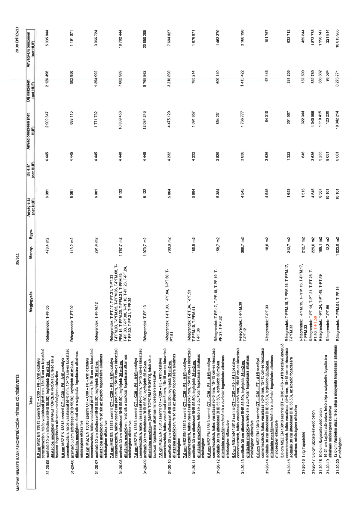

| Tétel | Megjegyzés | Menny. | Egys. | Anyag e.ár (net HUF) | Díj e.ár (net HUF) | Anyag összesen (net HUF) | Díj összesen (net HUF) | Anyag+Díj összesen (net HUF) |
|---|---|---|---|---|---|---|---|---|
| 31-20-05 8,0 cm MSZ EN 13813 szerinti CT – C30 – F6 - A1fl osztályú cementesztrich, hálós vasalással (d=6 mm, 15x15 cm-es kiosztású acélháló 30 cm átfedéssel BHB 55.50), legfeljebb 25 m2-es dilatációs mezőkben [MAPEI TOPCEM PRONTO], felső sík a burkolat fogadására alkalmas minőségben elkészítve | Rétegrendek: T-PF.05 | 478,4 | m2 | 6 081 | 4 445 | 2 909 347 | 2 126 496 | 5 035 844 |
| 31-20-06 8,0 cm MSZ EN 13813 szerinti CT – C30 – F6 - A1fl osztályú cementesztrich, hálós vasalással (d=6 mm, 15x15 cm-es kiosztású acélháló 30 cm átfedéssel BHB 55.50), legfeljebb 36 m2-es dilatációs mezőkben, felső sík a szigetelés fogadására alkalmas minőségben elkészítve | Rétegrendek: T-PF.02 | 113,2 | m2 | 6 081 | 4 445 | 688 115 | 502 956 | 1 191 071 |
| 31-20-07 8,0 cm MSZ EN 13813 szerinti CT – C30 – F6 - A1fl osztályú cementesztrich, hálós vasalással (d=6 mm, 15x15 cm-es kiosztású acélháló 30 cm átfedéssel BHB 55.50), legfeljebb 36 m2-es dilatációs mezőkben, felső sík az álpadló fogadására alkalmas minőségben elkészítve | Rétegrendek: T-PFM.12 | 291,4 | m2 | 6 081 | 4 445 | 1 771 732 | 1 294 992 | 3 066 724 |
| 31-20-08 7,5 cm MSZ EN 13813 szerinti CT – C20 – F5 - A1fl osztályú cementesztrich, hálós vasalással (d=6 mm, 15x15 cm-es kiosztású acélháló 30 cm átfedéssel BHB 55.50), legfeljebb 36 m2-es dilatációs mezőkben, felső sík a burkolat fogadására alkalmas minőségben elkészítve | Rétegrendek: T-PT.17, T-PT.31, T-PT.33, T-PFM.03, T-PFM.05, T-PFM.06, T-PFM.08, T-PFM.14, T-PFM.25, T-PFM.31, T-PFM.43 | 1 767,7 | m2 | 6 132 | 4 448 | 10 839 456 | 7 862 989 | 18 702 444 |
| 31-20-09 7,5 cm MSZ EN 13813 szerinti CT – C30 – F6 - A1fl osztályú cementesztrich, hálós vasalással (d=6 mm, 15x15 cm-es kiosztású acélháló 30 cm átfedéssel BHB 55.50), legfeljebb 25 m2-es dilatációs mezőkben [MAPEI TOPCEM PRONTO], felső sík a burkolat fogadására alkalmas minőségben elkészítve | Rétegrendek: T-PF.13 | 1 970,7 | m2 | 6 132 | 4 448 | 12 084 243 | 8 765 962 | 20 850 205 |
| 31-20-10 7,0 cm MSZ EN 13813 szerinti CT – C20 – F5 - A1fl osztályú cementesztrich, hálós vasalással (d=6 mm, 15x15 cm-es kiosztású acélháló 30 cm átfedéssel BHB 55.50), legfeljebb 36 m2-es dilatációs mezőkben, felső sík az álpadló fogadására alkalmas minőségben | Rétegrendek: T-PT.03, T-PT.04, T-PT.50, T-PT.51 | 760,6 | m2 | 5 884 | 4 232 | 4 475 129 | 3 218 898 | 7 694 027 |
| 31-20-11 7,0 cm MSZ EN 13813 szerinti CT – C20 – F5 - A1fl osztályú cementesztrich, hálós vasalással (d=6 mm, 15x15 cm-es kiosztású acélháló 30 cm átfedéssel BHB 55.50), legfeljebb 36 m2-es dilatációs mezőkben, felső sík a burkolat fogadására alkalmas minőségben | Rétegrendek: T-PT.34, T-PT.53, T-PFM.10, T-PFM.41, T-PF.36 | 185,5 | m2 | 5 884 | 4 232 | 1 091 657 | 785 214 | 1 876 871 |
| 31-20-12 6,5 cm MSZ EN 13813 szerinti CT – C20 – F5 - A1fl osztályú cementesztrich, hálós vasalással (d=6 mm, 15x15 cm-es kiosztású acélháló 30 cm átfedéssel BHB 55.50), legfeljebb 36 m2-es dilatációs mezőkben, felső sík a burkolat fogadására alkalmas minőségben elkészítve | Rétegrendek: T-PF.17, T-PF.18, T-PF.19, T-PF.27, T-PF.32 | 158,7 | m2 | 5 384 | 3 839 | 854 231 | 609 140 | 1 463 370 |
| 31-20-13 6,0 cm MSZ EN 13813 szerinti CT – C20 – F5 - A1fl osztályú cementesztrich, hálós vasalással (d=6 mm, 15x15 cm-es kiosztású acélháló 30 cm átfedéssel BHB 55.50), legfeljebb 36 m2-es dilatációs mezőkben, felső sík a burkolat fogadására alkalmas minőségben elkészítve | Rétegrendek: T-PFM.39, T-PF.12 | 388,7 | m2 | 4 545 | 3 636 | 1 766 777 | 1 413 422 | 3 180 198 |
| 31-20-14 6,0 cm MSZ EN 13813 szerinti CT – C30 – F7 - A1fl osztályú cementesztrich, hálós vasalással (d=6 mm, 15x15 cm-es kiosztású acélháló 30 cm átfedéssel BHB 55.50), legfeljebb 36 m2-es dilatációs mezőkben,felső sík a burkolat fogadására alkalmas minőségben elkészítve | Rétegrendek: T-PF.33 | 18,6 | m2 | 4 545 | 3 636 | 84 310 | 67 448 | 151 757 |
| 31-20-15 5,0 cm MSZ EN 13813 szerinti CT – C30 – F6 - A1fl osztályú önterülő cementesztrich, hálós vasalással (d=6 mm, 15x15 cm-es kiosztású acélháló 30 cm átfedéssel BHB 55.50), az álpadló fogadására alkalmas minőségben elkészítve | Rétegrendek: T-PFM.15, T-PFM.16, T-PFM.17, T-PFM.33 | 212,7 | m2 | 1 653 | 1 322 | 351 507 | 281 205 | 632 712 |
| 31-20-16 1 rtg Tapadóhíd | Rétegrendek: T-PFM.15, T-PFM.16, T-PFM.17, T-PFM.33 | 212,7 | m2 | 1 515 | 646 | 322 344 | 137 500 | 459 844 |
| 31-20-17 5,0 cm Szigetelésvédő beton | Rétegrendek: T-PT.14, T-PT.21, T-PT.28, T-PT.40, T-PT.58 | 229,0 | m2 | 4 545 | 3 636 | 1 040 986 | 832 789 | 1 873 775 |
| 31-20-18 10,0 cm Szigetelésvédő beton | Rétegrendek: T-PT.24, T-PT.48, T-PT.49 | 169,1 | m2 | 6 567 | 5 253 | 1 110 415 | 888 332 | 1 998 747 |
| 31-20-19 16-21 cm Lejtést adó beton, felső síkja a szigetelés fogadására alkalmas minőségben, felületi letolással | Rétegrendek: T-PT.56 | 12,2 | m2 | 10 101 | 8 081 | 123 230 | 98 584 | 221 814 |
| 31-20-20 12,0 cm Vasbeton aljzat, felső síkja a műgyanta fogadására alkalmas minőségben | Rétegrendek: T-PFM.01, T-PF.14 | 1 023,9 | m2 | 10 101 | 8 081 | 10 342 214 | 8 273 771 | 18 615 986 |
